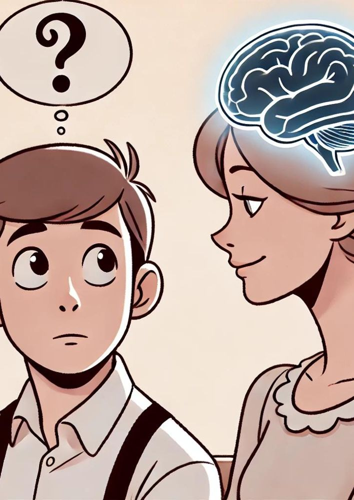

Is the mind a thing in its own right, distinct from the body? Take the tour: Descartes’ indivisibility and conceivability arguments, the responses to each, and the issues facing dualism – other minds, Ryle’s category mistake and the interaction problem.
AQA states the thesis of substance dualism in one line: minds exist and are not identical to bodies or to parts of bodies. On this view there are two fundamentally different kinds of substance. Physical substances are by essence extended – they take up three-dimensional space and have size, shape and location. Mental substances are by essence thinking – conscious – and are not extended at all. Your body is a physical substance; your mind, or soul, is a mental substance. Your thoughts and emotions are properties of the mind, and they come and go while the mind that has them stays the same.
This is the view most people in history have held, in one form or another, and it underlies many religious beliefs about life after death. It is most closely associated with René Descartes, who argued for it in Meditations on First Philosophy, Meditation VI (1641) – one of your set texts. The question matters because if substance dualism is true, physical science can never give a complete account of what we are. If it is false, we need to explain how something as apparently non-physical as consciousness can be part of the physical world. Every later theory in this module is, in part, a reaction to Descartes.
The handout recommends understanding substance dualism by cashing out each term. A substance is what ‘lies under’ properties: a chair that was once red and is now green has changed its colour properties but remains the same chair. Dualism is the claim that existence is fundamentally composed of two categories of substance:
Essentially extended: it has volume, shape and location, and can be measured. The body is a physical substance.
Essentially thinking (conscious): it has thoughts, emotions and perceptions, but no volume. The mind, or soul, is a mental substance.
The mind counts as a substance because it persists through changes in its properties: as a stream of consciousness it stays the same while particular thoughts and feelings come and go. Crucially, then, the mind is a substance and not a property – it is not a feature of the brain but a thing in its own right.
Both of Descartes’ arguments depend on a principle now called Leibniz’s law (the indiscernibility of identicals):
Leibniz’s law gives a simple test for distinctness: find one property that the mind has and the body lacks (or vice versa), and you have shown they are not identical. The indivisibility argument uses the property of being divisible. The conceivability argument uses the property of possibly existing without the other.
Descartes did not think the mind merely sits in the body. In Meditation VI he says that sensations such as pain, hunger and thirst teach him that he is not present in his body only as a sailor is present in a ship, but is very closely joined and, as it were, intermingled with it, so that he and the body form a unit. (Paraphrased from the handout’s translation.) So Descartes holds both that mind and body are distinct substances and that they form an intimate union. Whether he can consistently hold both is part of the interaction problem (Stop 6).
Descartes thinks the most obvious difference between the two substances is that the body can be divided and the mind cannot. In Meditation VI he writes:
‘there is a great difference between the mind and the body, inasmuch as the body is by its very nature always divisible, while the mind is utterly indivisible.’Descartes, Meditations VI (Cottingham translation, as quoted in the departmental handout)
When he considers himself purely as a thinking thing, he cannot distinguish any parts: he understands himself as something single and complete. If a foot or an arm is cut off, nothing is taken away from the mind. And the faculties of willing, understanding and sense-perception are not parts of the mind, because it is one and the same mind that wills, understands and perceives. By contrast, any extended thing can easily be divided in thought into parts.
Dissociative identity disorder. The handout discusses the documented case of ‘Miss Beauchamp’, whose distinct personalities differed in tastes (some hated smoking, one loved it), skills (one knew no French or shorthand) and memory, with one personality knowing all the thoughts of another. This looks like a mind that is functionally split.
Split-brain cases. In ‘Brain bisection and the unity of consciousness’, Thomas Nagel discusses patients whose corpus callosum (the band of fibres linking the two hemispheres) has been cut. When ‘pencil’ was flashed to one half of the visual field and ‘toothbrush’ to the other, and the patient was asked to retrieve the matching objects with both hands, each hand searched independently, the right hand picking up the pencil and the left rejecting it in favour of the toothbrush. (Paraphrased from the handout.) Perhaps consciousness itself can be divided.
Psychological division. Psychologists divide the mind into conscious and unconscious, and into different faculties with different functions.
These are divisions of function, not divisions of the mind as a substance. A computer running several programs has not been cut into pieces. Descartes already said that willing and perceiving are not parts of the mind; the different personalities or hemispheric ‘streams’ might similarly be activities, not parts. But the reply has a cost: if the split-brain patient has two centres of consciousness, it is hard to see what makes them one mind rather than two.
Some physical properties do not seem divisible: the temperature of a room, a magnetic field, or the property of belonging to the human race. If something physical can be indivisible, then the mind’s indivisibility does not show it is non-physical. A physicalist can say the mind is more like a physical property or process of the brain than like a lump of matter.
Descartes is arguing about substances, not properties. A room’s temperature is a property of a divisible substance. The objection only works if the mind is a property – which is what Descartes denies. But this makes the argument question-begging: it only shows the mind is a non-physical substance if we already assume it is a substance.
The indivisibility argument is valid, but each premise is vulnerable. Premise 2 relies on introspection, and introspection may simply fail to reveal the mind’s divisions; the split-brain evidence suggests the unity of consciousness depends on the physical brain. Premise 1 is true of physical substances but false of physical properties, so the argument at best shows the mind is not a physical object – leaving property dualism and physicalist theories that treat mind as a process untouched. The most a dualist can claim is that the argument shows the mind is not a divisible lump of matter.
Descartes argues that everything he clearly and distinctly understands is capable of being created by God exactly as he understands it. So if he can clearly and distinctly understand one thing apart from another, they are capable of being separated, at least by God – and so they are distinct. He has a clear and distinct idea of himself as a thinking, non-extended thing, and a clear and distinct idea of body as an extended, non-thinking thing. So he is really distinct from his body and can exist without it. (Paraphrased from Meditations VI.)
AQA asks for the argument expressed without reference to God. The role God played – guaranteeing that what is clearly conceived is possible – is taken over by a general principle linking conceivability to possibility. The handout gives the core in three lines:
The handout’s shorter version: (1) ‘I’ am possibly such as to be non-extended; (2) no physical body is possibly such as to be non-extended; (C) therefore I am not a body.
The departmental slides on conceivability distinguish two senses of conceive: understanding a proposition (I understand ‘there is a chiliagon in the museum’) and picturing a state of affairs (I cannot really picture a thousand-sided figure). They also distinguish kinds of possibility. Something is logically possible if it involves no contradiction; physically possible if it breaks no law of nature; and metaphysically possible if it could really have been the case, given the natures of the things involved. In possible-worlds language, a necessary truth holds in all possible worlds; a contingent truth in some; an impossibility in none.
Behaviourists (3.4.3) argue that mental concepts are concepts of behaviour and dispositions to behave; on that analysis, the idea of a mind without a body is confused, like the idea of a smile without a face. Descartes may think he is conceiving of a disembodied mind, but what he is really conceiving is just his own ignorance of how his mind depends on his body. Compare: someone might think they are conceiving of water that is not H₂O, but they are really conceiving of a different, watery-looking substance.
The handout notes Descartes could say this objection proves too much: it would make the idea of God or a ghost – a mind without a body – inconceivable, yet people clearly do conceive of these and understand stories about them.
Conceivability may be a guide to logical possibility, but not to metaphysical possibility. Before 1811 someone could have conceived of water without hydrogen, but because water is H₂O, water without hydrogen is metaphysically impossible. Likewise, if the mind is the brain, a mind without a brain is impossible, however conceivable it seems. And without God to guarantee the link, Descartes has no reason to trust premise 2. At best, as Scott Sturgeon suggests, conceivability gives defeasible evidence of possibility.
The slides set out three ways to respond to any conceivability argument: (1) accept that conceivability implies possibility; (2) deny that it does; (3) deny that the thing is really conceivable. Responses 1 and 2 here are options (3) and (2).
Even if a disembodied mind is possible in some possible world, it does not follow that in the actual world my mind is something other than my body. Perhaps in some possible worlds minds are non-physical, while in ours they are physical. Descartes needs an extra claim: that what a thing is, it is necessarily – so if my mind could be non-physical, it actually is.
Many philosophers accept that identity is necessary: if A really is B, then A is B in every possible world (Cicero could not have failed to be Tully). If so, Response 3 fails: showing it is possible for mind and body to be distinct shows they are not actually identical. The physicalist must therefore fall back on Response 1 or 2.
Without God, the argument stands or falls with the principle that clear conceivability implies metaphysical possibility. The water/H₂O case shows that principle fails at least sometimes: we can conceive of things that are necessarily false because we do not know their underlying nature. Since we do not know the underlying nature of the mind, our ability to conceive of it without the body tells us little. The strongest version of the argument therefore shows only that we cannot know a priori that mind and body are identical – which physicalists like Smart happily accept (see identity theory).

Substance dualism claims that the mind is immaterial and non-extended, and so cannot be seen with the senses. I have immediate, private and privileged access to my own mind, but I have no empirical evidence of any other mind and no direct access to it. The most I can do is infer that others have minds from their behaviour and speech. And it is logically coherent that they do not. This is an epistemic problem, and the handout notes it is a logical consequence of Descartes’ philosophy of mind.
This leaves us at risk of solipsism, the view that only my mind exists – or at least of scepticism about other minds. Note that the problem applies to dualism in general (AQA lists it under ‘issues facing dualism’), so it applies to property dualism too.
J.S. Mill offers an argument from analogy:
I am generalising from one example – my own mind – to billions. That is like concluding that all water boils at 100°C from one observation. Analogical arguments are inductive, not proofs, and this one is unusually weak.
I do not have one case but thousands: every time I am hungry and eat, or thirsty and drink, I observe a type of behaviour with a mental cause. I see the same types of behaviour in others, so I have many cases to go on.
All these cases are still from one mind – mine – so the sample remains biased. The principle that similar effects have similar causes is not always true, and some behaviour has no mental cause at all (sleepwalking, reflexes). Worse, the conclusion can never be checked: I can never observe another mind to confirm the inference.
We do not need a proof. The existence of other minds is the best explanation of other people’s behaviour. Their behaviour is complex, flexible, purposeful and responsive to reasons and language in ways that are explained very well by supposing they have beliefs, desires and experiences like mine. No rival hypothesis (they are automata, or I am dreaming them) explains as much as simply, or predicts as well.
On dualism, why is it the best explanation? If minds are immaterial, then other people’s behaviour could in principle be fully explained by their brains (especially given causal closure), so the hypothesis that there is also an immaterial mind behind it adds nothing to the explanation. Ironically, the best-hypothesis reply works better for physicalists, for whom the mind just is what produces behaviour.
Inference to the best explanation is how we justify belief in electrons, the past and the external world; it would be special pleading to reject it here. And our own case gives us direct evidence that minds explain behaviour.
Both responses give us reasonable belief rather than certainty, but that is all we have for most of our knowledge. The deeper issue is the one Anita Avramides (set text) highlights: the problem only arises in this acute form because dualism makes minds inner and hidden. The analogical argument is weak because it relies on one case; the best-hypothesis response is stronger, but its strength depends on minds being causally relevant to behaviour – which pushes the dualist back into the interaction problem.
In The Concept of Mind (1949), Gilbert Ryle calls the Cartesian picture ‘the dogma of the Ghost in the Machine’ (Ryle’s phrase). He argues that it rests not on a false empirical claim but on a logical error: a category mistake. A category mistake is the error of presenting facts as if they belonged to one logical category when they belong to another.
A visitor is shown Oxford’s colleges, libraries, laboratories and offices, and then asks: ‘But where is the University?’ The visitor has made a category mistake. The university is not another building alongside the colleges; it is the way all of them are organised. Ryle gives similar examples: a foreigner watching cricket who, having seen the bowlers, batsmen and fielders, asks where ‘team spirit’ is. (Paraphrased from Ryle, The Concept of Mind, ch. 1.)
Ryle thought this also dissolves the problems of interaction and other minds: if minds are not ghostly things, there is no puzzle about how they push bodies, and no hidden inner theatre to be sceptical about.
Ryle’s argument depends on behaviourism being true. But mental states seem distinct from behaviour: a perfect actor can behave as if in pain without feeling it, and a ‘super-spartan’ can feel pain without showing it (3.4.3). If mental concepts do not refer to behaviour, then treating them as referring to inner states is no mistake at all.
Ryle may be making the opposite category mistake – treating mental states as dispositions when they belong to the category of inner, conscious episodes. Pains and visual experiences seem to be occurrences, happening at a time and felt by a subject, not merely tendencies to behave.
Even if Ryle’s full behaviourism fails, his core point survives: we should not assume that because we have nouns like ‘mind’ there must be a special thing they name. Many physicalists accept this lesson without being behaviourists – the mind is what the brain does.
Ryle’s objection is only as strong as his positive account of mental concepts. As a diagnosis it is powerful: it explains why dualism is tempting (the grammar of ‘mind’ suggests a thing) without granting that it is true. But as a refutation it presupposes a behaviourist analysis that faces serious objections, especially from phenomenal consciousness. A fair judgement: Ryle shows that dualism is not forced on us by the way we talk about minds, but he does not show that dualism is incoherent.
Descartes is an interactionist dualist: the mind causes changes in the body (I decide to go to the kitchen, and I walk there) and the body causes changes in the mind (I stub my toe and feel pain). The specification names two problems for this.
In May 1643 Princess Elisabeth of Bohemia wrote to Descartes asking how the human soul, being only a thinking substance, can determine the bodily spirits so as to cause voluntary actions. (Paraphrased from her letter; Shapiro translation is the set text.) Her point is conceptual. On the understanding of causation in Descartes’ own physics, one thing moves another by contact – by pushing it – which requires extension and surface. But the mind, by definition, is not extended. So the very concept of a non-extended mind moving an extended body seems incoherent.
Descartes replied that the union of mind and body is a ‘primitive notion’ understood through the senses rather than the intellect, and compared it to the way people once (wrongly) conceived of heaviness acting on a body. Elisabeth was not satisfied; the handout notes she suggested that the soul might have properties we do not know, which might overturn the doctrine that it is non-extended.
Premise 1 is out of date. Physics now recognises causation without contact – gravity and electromagnetic fields act at a distance. And since Hume, many philosophers think causation is just regular succession, which requires no mechanism: we never ‘see’ the necessary connection even between billiard balls. So there may be no conceptual barrier to mind–body causation.
Forces such as gravity still operate in space, between things with location. The mind has no location at all. And if causation is mere regularity, why should this mind be regularly connected with this body rather than another? Spatial location usually answers that question; the dualist cannot use it.
The second problem is empirical. Science gives us strong evidence for the causal closure of the physical: every physical event that has a cause has a sufficient physical cause. Neuroscience traces the causes of muscle movements back through nerve signals to brain events, and finds only physical causes. If the mind is non-physical and causes bodily movement, then either (a) physical laws are broken in the brain – energy appears from nowhere, violating its conservation – or (b) bodily movements are overdetermined, with a full physical cause and a mental cause as well. Neither looks credible.
(1) Causal closure is an inductive generalisation, not something proved; and we do not yet have a settled understanding of causation (the handout cites Hume). (2) Quantum indeterminacy may leave gaps in physical causation that a mind could exploit without violating physical law. (3) The dualist can give up interaction and accept that the mind does not cause physical events (epiphenomenalism) – but that faces its own problems (see property dualism).
The physicalist can reply that even though we do not fully understand causation, we can at least see how physical causes connect (heat raises the temperature of a liquid); we cannot envisage how an immaterial cause would work at all. So the physicalist hypothesis is stronger.
The two problems work as a pair. The conceptual problem asks how interaction could work and is weakened by modern physics and Humean causation. The empirical problem asks where it could happen, and is much harder to escape: unless causal closure is false, an immaterial mind has no causal work to do. This is arguably the most serious objection to substance dualism, because it threatens the one thing Descartes most needs – that my thoughts make a difference to what I do.
Descartes’ two arguments both rely on Leibniz’s law, and both are valid; the question is whether their premises are true. The indivisibility argument at most shows the mind is not a divisible physical object, since physical properties can be indivisible, and split-brain cases cast doubt on the unity of consciousness. The conceivability argument, once God is removed, depends on the principle that conceivability implies metaphysical possibility – a principle that fails when, as with water and H₂O, we do not know a thing’s underlying nature. Meanwhile dualism faces the problem of other minds (manageable through inference to the best explanation, though only if minds are causally relevant), Ryle’s charge of a category mistake (powerful as a diagnosis, but dependent on behaviourism) and the interaction problems. A sustained judgement: neither argument establishes substance dualism, and the empirical interaction problem gives positive reason to reject it, because a non-physical mind seems to have no causal role in a causally closed physical world. Its lasting value is that it identifies something – consciousness – that any rival theory must still explain.